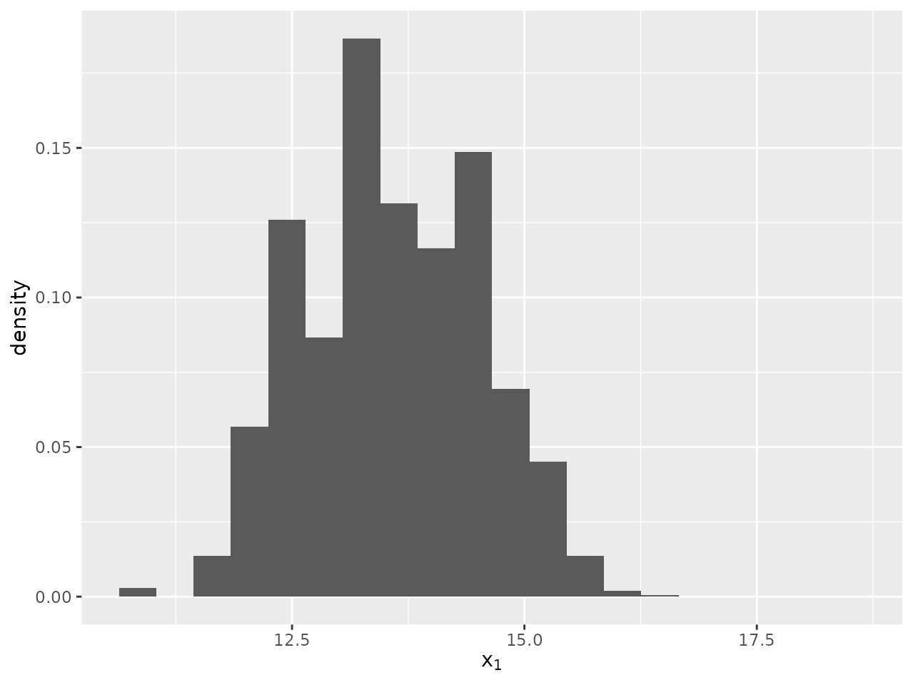
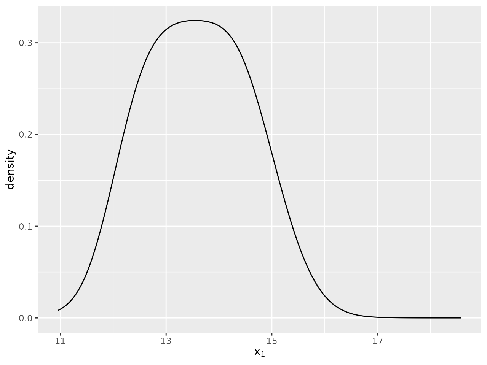
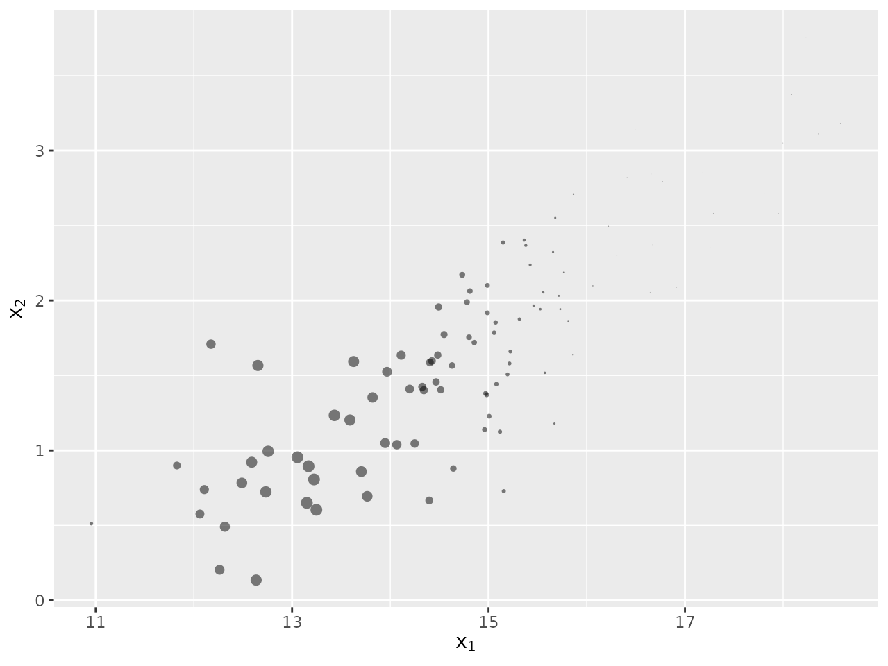
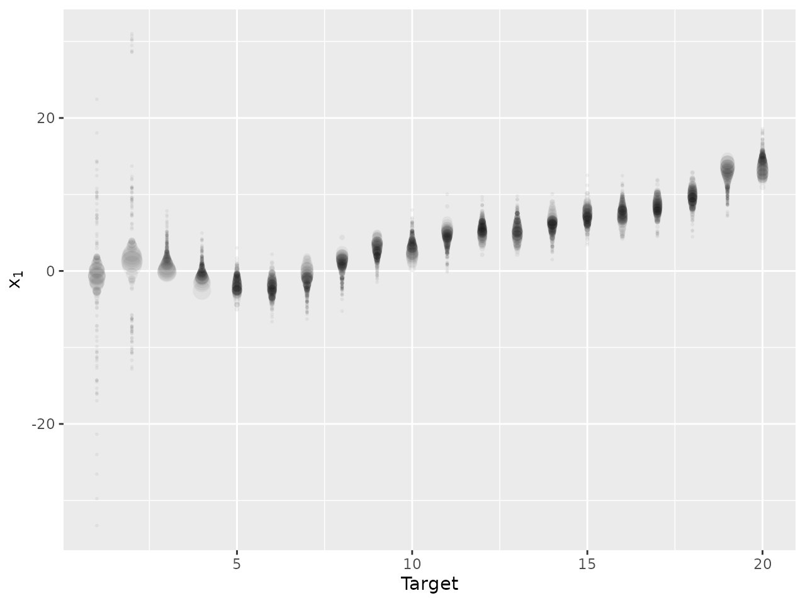
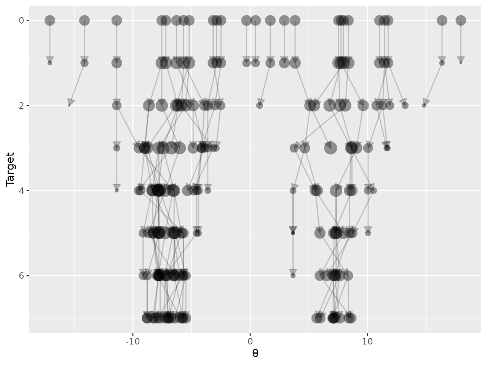
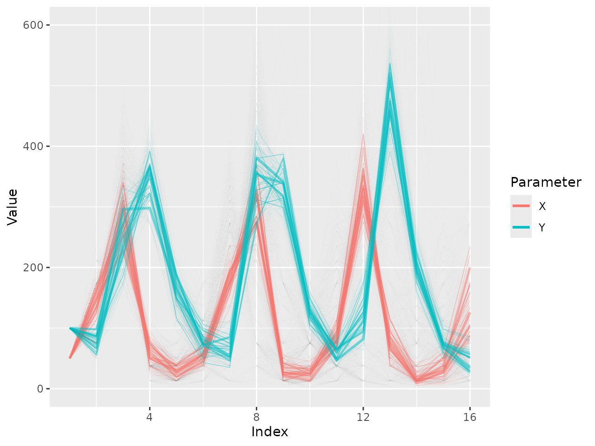
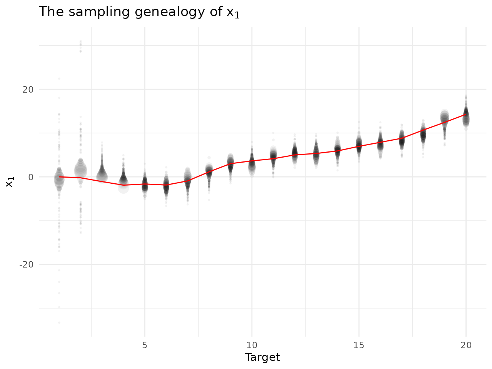

Visualising the output of Monte Carlo methods with ggsmc
Source:vignettes/Visualising.Rmd
Visualising.RmdThe ggsmc package uses ggplot2 to display
the results of importance sampling (IS), sequential Monte Carlo (SMC) or
ensemble-based algorithms. Each algorithm outputs a collection of
points, usually evolved through a sequence of target distributions,
which for IS and SMC are weighted.
Data format
To use this package the algorithm output must be in tidy format, where each
dimension of each parameter for each particle lies in a distinct row in
a data frame. The data sir_cwna_model provides an example
of valid input to the plotting functions.
library(ggsmc)
data(sir_cwna_model)
head(sir_cwna_model)
#> ExternalIndex Target Time NormalisingConstant ISESS TargetParameters
#> 1 1 1 0.0025475 -3.07181 16.2299 i=0;dt=1;
#> 2 1 1 0.0025475 -3.07181 16.2299 i=0;dt=1;
#> 3 1 1 0.0025475 -3.07181 16.2299 i=0;dt=1;
#> 4 1 1 0.0025475 -3.07181 16.2299 i=0;dt=1;
#> 5 1 1 0.0025475 -3.07181 16.2299 i=0;dt=1;
#> 6 1 1 0.0025475 -3.07181 16.2299 i=0;dt=1;
#> Iteration Particle AncestorIndex LogWeight ParameterName Dimension Value
#> 1 1 1 1 -28.057199 x 1 6.5297
#> 2 1 1 1 -28.057199 x 2 -15.4264
#> 3 1 2 2 -2.453099 x 1 -0.5869
#> 4 1 2 2 -2.453099 x 2 -8.7790
#> 5 1 3 3 -11.568199 x 1 3.6434
#> 6 1 3 3 -11.568199 x 2 -14.1641This data contains the output of a particle filter (PF) applied to a
target tracking problem. The state
tracked using the PF is two-dimensional, consisting of the
(one-dimensional) position and velocity of the target. The value of the
first particle for the first target distribution is given by
.
In tidy format, this is stored on two rows of the data frame, where the
Dimension column gives the index of the state
ParameterName: e.g. in the row where
ParameterName=="x" and Dimension==2, the
Value column gives the value of
.
If you are unfamiliar with it, this way of storing data with its many
repeated values might seem wasteful. Its strength is that this format
can be used consistently across different situations, allowing the use
of general purpose packages for processing and, in our case, plotting
the data. If your data is in the more standard matrix format for Monte
Carlo output (i.e. one parameter vector per row), then you can use the
matrix2tidy function included in the package to convert to
the required format your algorithm output for each target distribution.
For this function you need to supply your algorithm output
in matrix format, a name for the parameter that is
represented in the output, an integer index for the target
to which the output corresponds and the log_weights of each
particle if using an IS or SMC algorithm. If using an algorithm that
iterates over multiple targets, the matrix2tidy function
should be called for each target, then the output of each call stacked
together using rbind.
The sir_cwna_model data contains more columns than are
required to use the plotting functions in this package. The columns
required by all functions are:
Target, which indexes the target distribution, taking a different integer values for each target.Particle, which indexes the particles, taking a different integer value for each particle.ParameterName, which uses a string to name each parameter.Dimension, which indexes the dimension of the parameter, taking a different integer value for each dimension.Value, which stores the numerical value for the particle, target, parameter and dimension specified by the other columns.
For the output of an IS or SMC algorithm, we may additionally include
a LogWeight column to store the log of the (normalised)
weight of the particle. If this column is not found in the data, each
particle will be assigned an equal weight.
Histograms and densities
The plot_histogram and plot_density
functions may be used to plot, respectively, a histogram or density of
the marginal distribution of one dimension of one parameter. If the
LogWeight column is present in the data a weighted
histogram/density will be used.
For these functions, a parameter (string) and
dimension (integer) argument need to be used. If the
target variable is set, the function will plot the marginal
histogram/density for the specified target, parameter and dimension. If
no target is specified, the points for all points for the specified
parameter and dimension will be used for the plot. The
plot_histogram function also takes a bins
argument, which may be used to specify the number of bins for the
histogram (if this argument is not specified, the default value in
ggplot2 is used).
For an example, we look at the 20th target of the
sir_cwna_model data using both a histogram and a
density.
plot_histogram(sir_cwna_model,
parameter = "x",
dimension = 1,
target = 20,
bins = 20)
plot_density(sir_cwna_model,
parameter = "x",
dimension = 1,
target = 20)
Scatter plots
The plot_scatter function can we used to creates a
scatter plot of the Monte Carlo representation of the joint distribution
between two parameters, or two dimensions of the same parameter. We
specify the parameter and dimension for the x-axis using the arguments
x_parameter and x_dimension respectively. The
target variable plays the same role as for
plot_histogram and plot_density. If a
LogWeight column is present in the data, the size of the
points in the scatter plot will be used to represent the particle
weights.
We illustrate this plot again on the 20th target of the
sir_cwna_model data.
plot_scatter(sir_cwna_model,
x_parameter = "x",
x_dimension = 1,
y_parameter = "x",
y_dimension = 2,
target = 20,
alpha = 0.5,
max_size = 3)
Note that in this plot we have used two additional arguments,
alpha and max_size, to adjust the look of the
plot. In this example we have very few importance points, I found the
default value of alpha = 0.1 (the transparency of the
points from 0 to 1) to be too low, and the default
max_size = 1 (governing the size of the points) to be too
small.
Genealogies
To more clearly understand the output of an SMC or ensemble-based
algorithm it can be useful to visualise the evolution of the particles
over time. The function plot_genealogy may be used for this
purpose, for one dimension of one parameter. We again use the
sir_cwna_model data to illustrate this function, showing
the evolution of the PF’s estimate of the target position over time.
plot_genealogy(sir_cwna_model,
parameter = "x",
dimension = 1,
use_initial_points = FALSE,
vertical = FALSE,
alpha_lines = 0,
alpha_points = 0.05,
arrows = FALSE)
The first few arguments are the same as those used for the
plot_density function. We have used several additional
arguments the alter the plot:
use_initial_points(default TRUE) governs the inclusion (or otherwise) of the initial unweighted points drawn from the proposal used to initialise the algorithm. In this case we chose to omit these points so that we show only the estimate of the filtering distribution at each time.vertical(default TRUE) controls the orientation of the figure.alpha_lineschanges the transparency (from 0, transparent, to 1, solid) of the lines connecting corresponding points between successive targets. Here we choose to omit these lines by making them invisible.alpha_pointschanges the transparency (from 0, transparent, to 1, solid) of the points (whose size is given by theLogWeightscolumn if included in the data.arrows(default TRUE) determines if arrows are included on the lines in the plot (omitted in this plot).
To illustrate an alternative configuration of a genealogy plot, we use output from a different algorithm: an SMC sampler applied to a sequence of targets on parameter that begins with a Gaussian distribution, and ends with a two-component mixture of Gaussians.
data(mixture_25_particles)
plot_genealogy(mixture_25_particles,
parameter = "θ",
dimension = 1,
alpha_lines = 0.2,
alpha_points = 0.4)
For an SMC algorithm, due to the resampling
step the index of the ancestor of particle
for each target is not likely to be
.
To produce a plot with lines that connect each particle with its
ancestor, we need an additional column in the data named
AncestorIndex.
Time series
For some algorithms each Monte Carlo point represents a time series,
where the index that thus far has been represented by the column
Dimension can be thought of as indexing time. To illustrate
this we plot simulations from a stochastic Lotka-Volterra
model produced during a run of an approximate
Bayesian computation (ABC) algorithm. These are contained in the
data lv_output.
data(lv_output)
plot_time_series(lv_output,
parameters = c("X","Y"),
alpha = 0.5,
ylimits=c(0,600))
In this plot the weight (given by LogWeight) of each
time series is represented by the width the line. We make the lines more
visible by choosing alpha = 0.5 compared to the default
0.1, and change the limits of the y-axis by using
ylimits=c(0,1000). There is only one target, so the
target argument does not need to be specified. The
max_line_width argument (not used here) can be used to
scale the width of all lines in the plot.
Modifying figures
All figures are created using ggplot2, so can be
modified using other functions from this package. We now demonstrate
this by adding the true target position onto a plot of the
sir_cwna_model data, and changing its style. We also
demonstrate the ability to automatically generate a title for the
figure.
data(cwna_data)
plot_genealogy(sir_cwna_model,
parameter = "x",
dimension = 1,
use_initial_points = FALSE,
vertical = FALSE,
alpha_lines = 0,
alpha_points = 0.05,
arrows = FALSE,
default_title = TRUE) +
ggplot2::geom_line(data=cwna_data,ggplot2::aes(x=Index,y=Position),colour="red",inherit.aes = FALSE) +
ggplot2::theme_minimal() +
ggplot2::theme(legend.position="none")
Animating plots
The histogram, density, scatter and time series plots can all be
animated, to show how the output changes over a sequence of target
distributions. Below we show the code for generating (looping) 10 second
animations (set by the duration argument) showing how the
sir_cwna_model data changes over the sequence of 20
targets.
animate_histogram(sir_cwna_model,
parameter = "x",
dimension = 1,
bins = 20,
duration = 10)
animate_density(sir_cwna_model,
parameter = "x",
dimension = 1,
duration = 10)
animate_scatter(sir_cwna_model,
x_parameter = "x",
x_dimension = 1,
y_parameter = "x",
y_dimension = 2,
alpha = 0.5,
max_size = 3,
duration = 10)For time series, there are two possible animations. One,
animate_time_series, shows how the time series particles
evolve over a sequence of (non-time ordered) targets. The other,
animate_reveal_time_series, illustrated below on
lv_output, animates the time series to show how the
population of particles evolves over time.
data(`lv_output`)
animate_reveal_time_series(lv_output,
parameters = c("X","Y"),
alpha = 0.5,
ylimits=c(0,600),
duration = 10)